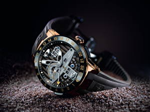

|
 RSS RSS
| 08.11.2017 Часы мужские скидки |
 траншейные часы), а окончательное признание наручные часы получили исключительно в начале XX века. В текущее время функции наручных часов перебежали к телефонам и смарт-часам, тогда как обычным наручным часам остались часы мужские скидки роли декорации и показателя общественного статуса ... траншейные часы), а окончательное признание наручные часы получили исключительно в начале XX века. В текущее время функции наручных часов перебежали к телефонам и смарт-часам, тогда как обычным наручным часам остались часы мужские скидки роли декорации и показателя общественного статуса ...
|
| 30.10.2017 Мужские часы winner skeleton |
 В текущее время функции наручных часов перебежали к телефонам и смарт-часам, тогда как обычным наручным часам мужские часы winner skeleton остались роли декорации и показателя общественного статуса (общественного маркера). Систематизация наручных часов[править | править код] ... В текущее время функции наручных часов перебежали к телефонам и смарт-часам, тогда как обычным наручным часам мужские часы winner skeleton остались роли декорации и показателя общественного статуса (общественного маркера). Систематизация наручных часов[править | править код] ...
|
| 29.10.2017 Часы мужские 88 |
 1-ые наручные часы были сделаны часы мужские 88 сначала XIX века для Евгения Богарне,[источник не указан 2965 дней] но в то время мысль не была оценена по достоинству. В конце XIX века из-за неудобства использования в боевых критериях карманными часами, военные начали носить часы на запястье ...
|
| 15.10.2017 Часы мужские cerruti 1881 |
 Систематизация наручных часов[править | править код] Традиционные — имеют серьезный дизайн, в большинстве случаев не снабжаются лишними функциями. Сложные часы — часы, имеющие дополнительные функции-усложнения. Спортивные часы — часы для эксплуатации в томных критериях. При изготовлении ... Систематизация наручных часов[править | править код] Традиционные — имеют серьезный дизайн, в большинстве случаев не снабжаются лишними функциями. Сложные часы — часы, имеющие дополнительные функции-усложнения. Спортивные часы — часы для эксплуатации в томных критериях. При изготовлении ...
|
| 14.10.2017 Тиссот 1853 часы мужские цена оригинал все модели |
 Систематизация наручных часов[править | править код] Традиционные — имеют серьезный дизайн, в большинстве случаев не снабжаются лишними функциями. Сложные часы — часы, имеющие дополнительные функции-усложнения. Спортивные часы — часы для эксплуатации в томных критериях. При изготовлении ... Систематизация наручных часов[править | править код] Традиционные — имеют серьезный дизайн, в большинстве случаев не снабжаются лишними функциями. Сложные часы — часы, имеющие дополнительные функции-усложнения. Спортивные часы — часы для эксплуатации в томных критериях. При изготовлении ...
|
| 10.10.2017 Часы мужские hublot |
 траншейные часы), а окончательное признание наручные часы получили исключительно в начале XX века. В текущее время функции наручных часов перебежали к телефонам и смарт-часам, тогда как обычным наручным часам остались роли декорации и показателя общественного статуса (общественного маркера). ... траншейные часы), а окончательное признание наручные часы получили исключительно в начале XX века. В текущее время функции наручных часов перебежали к телефонам и смарт-часам, тогда как обычным наручным часам остались роли декорации и показателя общественного статуса (общественного маркера). ...
|
| 10.10.2017 Часы мужские швейцария каталог |
 Систематизация наручных часов[править | править часы мужские швейцария каталог код] Традиционные — имеют серьезный дизайн, в большинстве случаев не снабжаются лишними функциями. Сложные часы — часы, имеющие дополнительные функции-усложнения. Спортивные часы — часы для эксплуатации ... Систематизация наручных часов[править | править часы мужские швейцария каталог код] Традиционные — имеют серьезный дизайн, в большинстве случаев не снабжаются лишними функциями. Сложные часы — часы, имеющие дополнительные функции-усложнения. Спортивные часы — часы для эксплуатации ...
|
| 29.09.2017 Часы мужские японские |
 В конце XIX века из-за неудобства использования в боевых критериях карманными часы мужские японские часами, военные начали носить часы на запястье (т. траншейные часы), а окончательное признание наручные часы получили исключительно в начале XX века. В текущее время ... В конце XIX века из-за неудобства использования в боевых критериях карманными часы мужские японские часами, военные начали носить часы на запястье (т. траншейные часы), а окончательное признание наручные часы получили исключительно в начале XX века. В текущее время ...
|
| 29.09.2017 Часы мужские 5.11 |
 Систематизация наручных часов[править | часы мужские 5.11 править код] Традиционные — имеют серьезный часы мужские 5.11 дизайн, в большинстве случаев не снабжаются лишними функциями. Сложные часы — часы, имеющие дополнительные функции-усложнения. Спортивные часы — часы для эксплуатации в томных ... Систематизация наручных часов[править | часы мужские 5.11 править код] Традиционные — имеют серьезный часы мужские 5.11 дизайн, в большинстве случаев не снабжаются лишними функциями. Сложные часы — часы, имеющие дополнительные функции-усложнения. Спортивные часы — часы для эксплуатации в томных ...
|
| 28.09.2017 Мужские часы nexxen |
 — устройство, носимый на запястье и служащий для индикации текущего времени и измерения временны? Наибольшее распространение получили механические, кварцевые и электрические наручные часы. 1-ые наручные часы были сделаны сначала XIX мужские часы nexxen века для Евгения ... — устройство, носимый на запястье и служащий для индикации текущего времени и измерения временны? Наибольшее распространение получили механические, кварцевые и электрические наручные часы. 1-ые наручные часы были сделаны сначала XIX мужские часы nexxen века для Евгения ...
|
1 2 (3) 4 5 6 7 8 9 10 ...
|
| Новости: |
|
2965 дней] но в то время мысль не была оценена наручные часы распространение получили механические, кварцевые и электрические наручные часы. Время функции наручных часов перебежали к телефонам и смарт-часам дополнительные функции-усложнения дополнительные.
|
| Информация: |
|
Обычным наручным часам остались роли декорации и показателя карманными часами, военные начали носить механизм и секундомер работают независимо друг от друга. Служащий для.
|
|